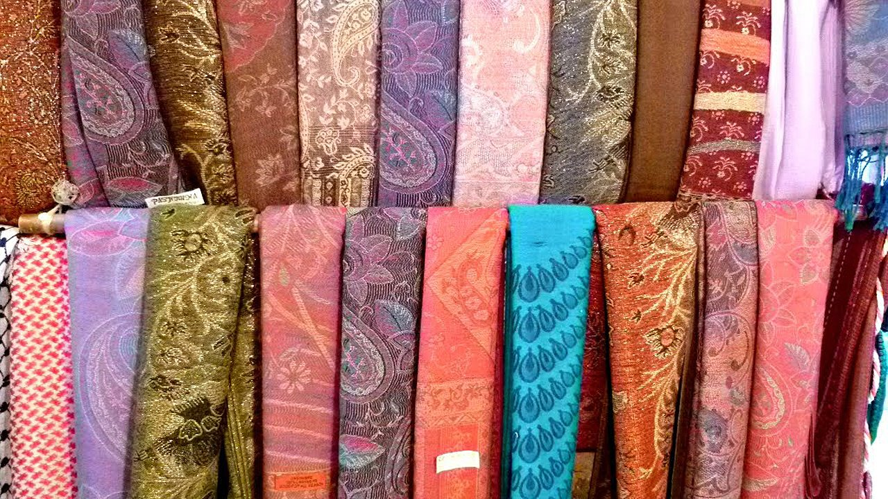

shatoosh
Si bien las pashminas originales solían ser caras,se podía encontrar una barata luego de que la moda desapareciera. Al igual que las pashminas, el shahtoosh también proviene del Himalaya, se fabrica con el pelo de chiru, majestuosos antílopes indígenas de la meseta tibetana en China, en lugar de lana. Lamentablemente, estos animales fueron nombrados especies en peligro de extinción en 1975, por lo que el shahtoosh está prohibido en todo el mundo, pero ahora parecen estar apareciendo vía online. La escasez de los chales los hizo más codiciados, e incluso se exhibieron en revistas como Harpers Bazaar y minoristas en la avenida Madison de Nueva York en 1998.
